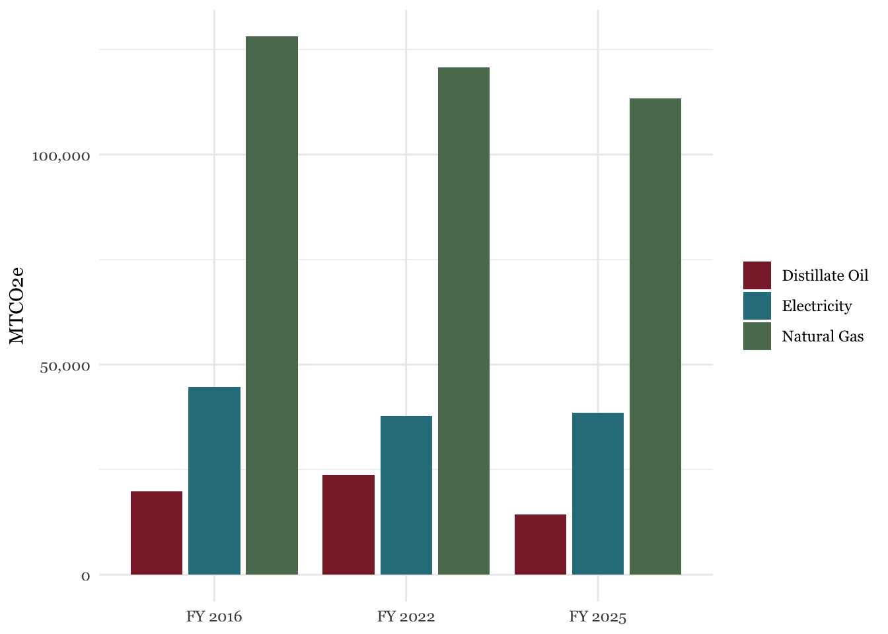
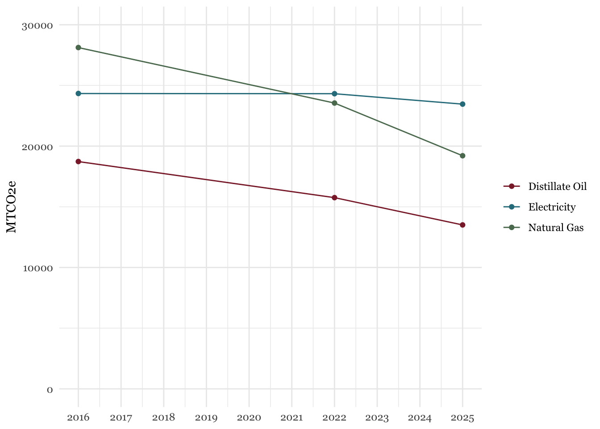

7 Community Stationary Energy
Community stationary emissions fell from 215,275 MTCO2e in FY 2016 to 185,898 MTCO2e in FY 2025, a 13.6% decrease.
| Inventory Year | Total MTCO2e | Percent Reduction |
|---|---|---|
| FY 2016 | 215,275 | 0.0% |
| FY 2022 | 195,769 | -9.1% |
| FY 2025 | 185,898 | -13.6% |
7.1 Emissions by Entity
- Community (non-college) stationary emissions experienced the most significant decreases in emissions. This is primarily due to reduced consumption of natural gas and oil.
- UMass emissions have decreased since FY 2016, but have remained relatively constant since FY 2022. Still, UMass has invested heavily in sustainable infrastructure, discussed previously, and these figures are expected to decrease significantly in coming years once these projects are reflected in the data.
- The current Amherst College stationary figure is a placeholder that will be updated once FY 2025 data is made available. The slight decrease comes from updated emissions factors.
- Hampshire College emissions will go away due to the closure of the college after the Fall 2026 semester. Future emissions depend on if and how their facilities are repurposed.
| Entity | FY 2016 | FY 2022 | FY 2025 | Δ% 2016 | Δ% 2022 |
|---|---|---|---|---|---|
| UMass | 119,829.8 | 110,736.0 | 109,597.6 | −8.5% | −1.0% |
| Community | 73,156.2 | 65,269.3 | 57,646.3 | −21.2% | −11.7% |
| Amherst College | 17,111.3 | 13,820.2 | 13,762.0 | −19.6% | −0.4% |
| Municipal | 3,248.0 | 2,690.1 | 2,770.3 | −14.7% | 3.0% |
| Hampshire College | 1,929.3 | 3,253.7 | 2,122.0 | 10.0% | −34.8% |
Note: Municipal figures differ slightly from previous sections due to minor rounding errors.
7.2 Highest-Emission Fuel Types
89.4% of stationary emissions come from natural gas, electricity, and oil fuel consumption. Both natural gas and heating oil have seen significant reductions in consumption in recent years, which has driven the overall decrease in emissions. Electricity consumption has remained relatively constant. This is consistent with a broad transition away from high-emission fuel sources and toward renewable energy.

7.3 Non-College Community Emissions
The previously-discussed trend in the mix of fuel usage is especially true among non-college community emissions. In FY 2022, emissions from natural gas consumption fell below those for electricity consumption, and this gap has only widened since.

7.3.1 Resident Heating Oil Consumption
Emissions related to residential heating oil have fallen from 18,729 MTCO2e in FY 2016, to 13,506 MTCO2e in FY 2025, a 28% decrease. Despite an increase in households, the percentage of households using heating oil fell from 32% in FY 2016 to 24% in FY 2025, which accounts for the decline in emissions. These are regional estimates, not specific to Amherst.
| Inventory Year | Total MTCO2e | Percent Reduction |
|---|---|---|
| FY 2016 | 18,729 | 0% |
| FY 2022 | 15,755 | -16% |
| FY 2025 | 13,506 | -28% |